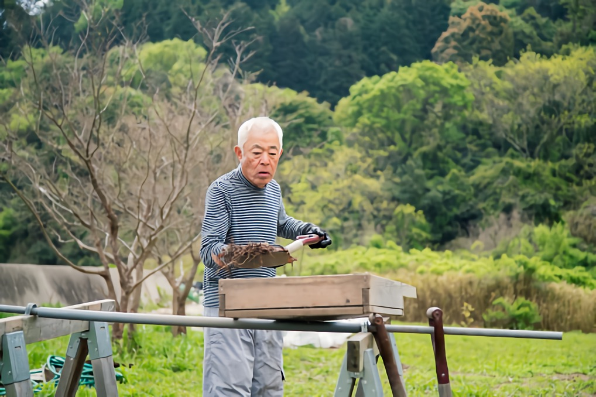

SEOで検索上位を獲得する記事の書き方【記事設計からライティング】

怠け者ブロガー「検索で上位表示されないなぁ。なんでだろうなぁ。」
こんなお悩みを解決する記事です。
本記事では、検索で上位表示するライティング方法を公開します。
「どうせ嘘でしょ〜」と言われると悲しいので、具体的なデータも公開しています。
尚、先にネタバレすると、記事を書く前が最重要ポイントです。具体的な記事ライティングは僕の専門外なので、少しだけの解説となっています。
序文はこれくらいにして、さっそく見ていきましょう。
１．記事を書く前に検索順位が決まる理由

次のとおりです。
記事を書く前に失敗しているパターン
- 読者ニーズが分かっていない
- 検索キーワードが分かっていない
このような状態でライティングしてもSEOで上位表示はできません。
まずはキーワード選定。その後に読者ニーズを考えましょう。
例えば、[フィリピン留学 失敗]というキーワードを狙う場合は、読者ニーズは、フィリピン留学で失敗したくない人です。つまり、失敗しない為の方法論を紹介すればOK。
フィリピン留学で失敗する留学生が続出している件【出会いに感謝！】
フィリピン留学で失敗する学生（留学しても英語力が伸びない学生）が増えています。フィリピン留学の失敗者を増やさないためにまとめ記事を書きました。
※狙ったキーワード：[フィリピン留学 失敗]（リスティング広告だと１クリックで700円以上です）
つまり、キーワードが選べていない状態でライティングしても無理です。検索ニーズの理解も大切です。
» 参考：SEOキーワード選定する方法。具体的に５つの手順で解説します。
怠け者ブロガー「キーワード選定の重要性は分かりました。もっと具体的な書き方を知りたいです。」
２．ニーズが多様なSEOキーワードで検索上位を獲得する方法

具体的な書き方に入る前にもう少々お待ち下さい。
[フィリピン留学 失敗]のニーズ予測は分かりやすかったけど、分かりづらいキーワードもあります。
具体例：[アメリカ留学 費用]の場合

スクショのとおりですが、[アメリカ留学 費用]と検索する人は様々なニーズを持っています。
こういった場合はニーズを切り分けましょう。
| 検索キーワード | 読者ニーズ |
[アメリカ留学 費用 1ヶ月] |
1ヶ月のアメリカ留学費用を知りたい |
[アメリカ留学 費用 1年間] |
1年間のアメリカ留学費用を知りたい |
[アメリカ留学 費用 一年] |
|
[アメリカ留学 費用 大学] |
アメリカ大学留学の費用を知りたい |
[アメリカ留学 費用 高校] |
アメリカの高校留学の費用を知りたい |
[アメリカ留学 費用 社会人] |
社会人がアメリカ留学する時の費用を知りたい |
[アメリカ留学 費用 安い] |
これは書かない |
簡単ですよね。
でも、この切り分けができれば検索上位GETに大きく近づきます。
※補足：なぜ、[アメリカ留学 費用 安い]は書かないのか？
[アメリカ留学 費用 安い]のキーワードは[アメリカ留学 格安]で狙いましょう。
ネットでは[安い]よりも[格安]が一般的なワードです。

つまり、[アメリカ留学 費用 安い]を知りたい読者には、[アメリカ留学 格安]の記事を見せればOK。格安のキーワード狙いつつも、安いってキーワードも入れておけば問題なしです。
怠け者ブロガー「ニーズが多様な記事は切り分けるのね。それは分かったので書き方を教えて。」
３．SEOで検索上位を獲得する記事設計とは

すいません、まだ具体的なライティングには入りません。
記事を書く前に構成を固めることが大切です。
具体例：[アメリカ留学 費用 1ヶ月]の場合
先ほど、[アメリカ留学 費用 1ヶ月]の読者ニーズは、1ヶ月のアメリカ留学費用を知りたいことだと書きました。
しかし、読者の潜在ニーズも考えるべきです。
- 顕在ニーズ：１ヶ月のアメリカ留学でかかる費用を知りたい
- 潜在ニーズ：出来ることなら安く留学したい
ややこしい日本語ですね。言葉の説明は次のとおり。
- 顕在ニーズとは、読者が自分で把握していること
- 潜在ニーズとは、読者が自分で把握していないけど、実は知りたいこと
結論：[アメリカ留学 費用 1ヶ月]で検索上位を獲得する記事設計とは

画像のとおりです。
まずは１ヶ月のアメリカ留学でかかる費用をまとめます。その後に、安く留学するコツなどを紹介する記事がベストです。
注意点：情報はなるべく網羅すること。
例えば、アメリカ留学の費用なら、語学学校費用だけではなく、保険・航空券・ビザ代なども全てまとめましょう。読者は複数記事を読みたくないです。メンドイので。
実例：[アメリカ留学 費用 1ヶ月]でググってみる

こんな感じです。
３位のサイトはちょっとドメインパワーが弱いかなという印象です。ドメインパワー強めたら順位が伸びると思います。
尚、検索結果にPAやDAといった数字が出ていますが、これはドメインパワー（ドメインの強さ）です。計測ツールはMOZbarというChrome拡張機能を利用しています
» MozBar – Google Chrome拡張機能
余談：この記事を書くときも設計図を作っています
この記事は[seo 検索 上位]というキーワードを狙っていますが、記事ライティング前に記事設計をしています。公開用に作っていないので見づらいですが、参考までに掲載しておきます。
» この記事を書いたときの記事設計書
{kind=link}
怠け者ブロガー「なんとなく分かった。じゃあ記事の書き方は？」
４．検索上位を獲得する記事の書き方

想定読者によって変わります。
例えば、20代前半の女性向けなら、絵文字とかいれてキャピキャピした文章が良いかなと。一方で、不動産投資の記事なら、硬い文章が良いですよね。
つまり、これが正解という書き方はありません。さんざん引っ張ったのに明確な答えがなくてすいません。「これが答えだ！」という記事ではありませんが、ある程度マニュアル化された書き方は下記記事にまとめています。
» ブログで文章構成を作る３つの手順【ブログ歴６年の僕が徹底解説】
SEO記事で読者が求めることは？
SNSでバズる記事とSEO記事では性質が異なります。
SEO記事で読者が求めているものは、最適な情報です。なので、結論から書くことをオススメします。文章がダラダラしてると離脱する読者が増えてしまいます。
また、実際のデータをみると、読まれる記事（＝読者の滞在時間）は検索順位が伸びやすい傾向にあります。このあたりは後述（補足：ドメインパワーがないと検索上位はとれないのか？）します。
５．SEOで検索上位が取れない失敗パターン２つ

２パターンご紹介します。
その①：キーワード選定とニーズ予測ミス
例えば、[英語 参考書]というキーワードを狙ったとして、次のような記事を書いたとします。
- 記事タイトル：【保存版】英語学習にオススメな参考書１０選
- 記事の内容：英語学習にオススメな参考書を厳選して10冊紹介している
たしかに一部ニーズは満たしますが、これじゃ上位は難しいです。
その②：サイト自体がSEO最適化されていない
内部対策が出来ていないと検索上位を取るのが難しいです。
無料ブログとかなら問題ないですが、WordPressでサイト運営している方は注意が必要です。
内部対策方法は別記事にまとめておりますのでご覧ください。
» SEO歴４年の僕が『内部対策で意識するべき１４項目』をまとめたよ
補足：ドメインパワーがないと検索上位はとれないのか？

2016年12月現在では、ドメインパワーが弱くても上位が取りやすくなっているように思います（僕の肌感覚です）。
{kind=link}
WordPressのおすすめプラグインは８つだけ。断言します
WordPressおすすめプラグイン50選みたいな記事が多いですが、50個のプラグインを放り込んだらメンテナンス不可能です。本当に必要なプラグインを経験に基いてまとめました。
元々は[WordPress プラグイン おすすめ]というキーワードを狙ったのですが、2016年9月7日に公開してから徐々に伸び始めました（2016年12月現在で６位）。
[WordPress プラグイン おすすめ]の記事順位の変動

それと同時に、[WordPress プラグイン]でも伸びていったのですが、2016年12月現在で７〜８位です。僕が愛用しているRankTrackerというツールでは簡単に競合比較ができるのですが、このキーワードで調査してみます。
[WordPress プラグイン]で上位10サイトを比較

見てお分かりの通り、ぼくのサイトはそこまで強くないです。被リンクも少ないし、Alexa rank（世界中のWebサイトをランキングした指標）とかもボロボロです。競合に勝っている部分はサイト内の最適化度数くらいです。
もう１つの実例を見てみましょう。
次に紹介するのは[SEO キーワード選定]を狙った記事です。
» SEOキーワード選定する方法。具体的に５つの手順で解説します。
[SEO キーワード選定]の記事順位の変動

こちらも徐々に伸びていって10位圏内に入りました。こちらも競合比較してみると次のとおり。
[SEO キーワード選定]で上位10サイトを比較

上位サイトは強豪ばかりです。これはもうちょいトラッキングしないと分からないですが、この１週間くらいは10位圏内で安定しているので、多分キープできると思います。
まとめ

以上、SEOで検索上位をGETする記事の書き方をまとめました。
もしかしたら気付いた方がいるかもしれませんが、「（WELQに）記事の設計をパクられたらどうするの？」という疑問が残ります。
１つの解決策としては、自分しか書けないことを書く方法です。例えば、僕はこの記事で実データを公開していますが、このへんは他者との差別化に繋がっています。
とはいえ、全部の記事で他者と完全に差別化するのは難しいので、パクられたら結構キツイですね…笑。かつ、大手キュレーションメディアとかは１万文字レベルのコンテンツを突っ込んできます…。結構このあたりは無理ゲーです。日頃からしっかりとサイト運営をして、徐々に被リンクを増やしつつサイトを強化するしかないですね…。
以上です。記事が参考になりましたら幸いです。
P.S：普段の僕は「Twitter」を軸に発信しています。また最近は「Webマーケ教材」の作成に注力しており、ネットで稼ぐスキルを学べます。ブログの更新通知は「メルマガ」から送っています。スパムは送りません。更新通知だけ送ります。